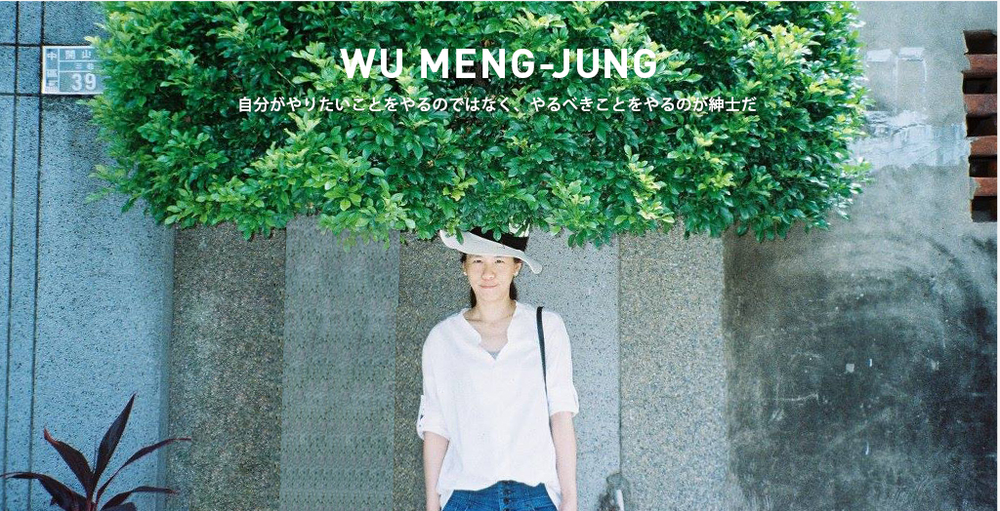
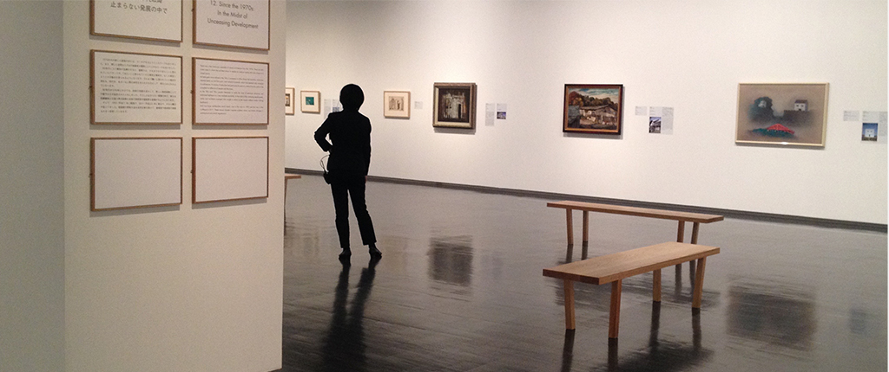

Hello
This is MJ, from Taiwan. I major in Graphic Design, I'm also a illustrator and self-taught Web Designer.I put my works here and hope you like. them.
大学を卒業した後、台湾の出版社で4年間グラフィックデザイナーとして働いていましたので、イラストレーター、フォトショップ、インデザインを使用したDTPの実務経験があります。自分の経験を活かしつつ新しい事も学びたいですし、現在独学中のHTML、CSSも身に付けたいです。デザインする事が好きなので、自分の好きな日本の地で自分の好きな仕事に携わる事ができたら嬉しいです。まだまだ未熟者ですが、一つ一つの仕事に責任持って丁寧に覚えて行きますので、よろしくお願い致します。

Hello